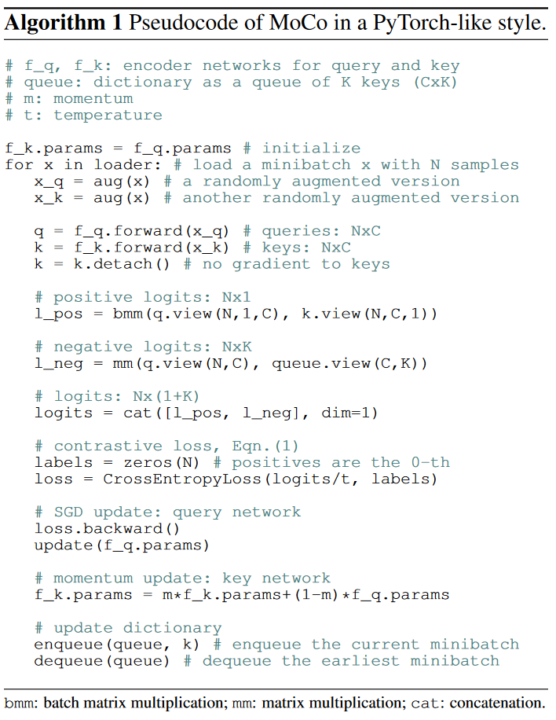

论文精读 MoCo
- 论文名称：Momentum Contrast for Unsupervised Visual Representation Learning
- 论文连接：1911.05722.pdf (arxiv.org)
0.基础知识
0.1 对比学习
对比学习顾名思义就是对比着学习，模型不需要知道图片具体是什么，只需要知道哪些图片类似，哪些不类似。
假设有三张图片，两张是人类，一张是狗，假如这三张图片都通过一个网络，得到了三个特征。如果已经有了一个学习好的特征空间，那么学习到的三个特征就是特征空间里的三个点，我们希望对比学习做到的就是：能把类似图片的特征尽可能的靠近，不类似的图片的特征尽可能的远离。如果能做到，那么我们就学到了一个很好的特征。
对比学习虽然不需要知道图片的标签信息，但还是需要知道哪些图片相似，哪些不相似，才能做模型训练。那为什么对比学习在视觉领域是一个无监督的训练方式呢？
因为在视觉领域，通过设计一些巧妙的代理任务，从而人为的订立一些规则，这些规则可以用来定义哪些图片是相似的，哪些是不相似的。从而可以提供一个监督信号去训练模型，这就是所谓的自监督训练。
0.2 最广泛应用的代理任务：instance discrimination个体判别
如果我们有一个没有标签的数据集，里面有n张图片：$x_1…x_n$，那么如何去定义相似呢？
instance discrimination的做法如下：随机选择一张图片，对其做随机剪裁+数据增广（即transformation），得到另外两张图，此时虽然已经不同了，但是因为来自同一张图片，他们的语义信息不应该发生变化。这两张图片被称作正样本，这个数据集里其余的图片被看做负样本。对于这个代理任务，它认为所有的图片自成一类。
对比学习中常见的实现方式：有了这个代理任务，有了这个去定义正负样本的规则之后，接下来就是通过一个模型，再得到一些特征，对这些特征使用一些常见的对比学习的目标函数就可以了，比如NCEloss
对比学习最厉害的地方在于，它的灵活性：什么都可以比，哪个领域都能用，自然后来就扩展到了多模态领域，造就了后来openai的clip模型
1.题目&作者
题目：动量对比学习的方法去做无监督的表征学习
Momentum Contrast
动量对比学习，动量可以从数学上理解为一种加权移动平均
为了让当前时刻的输出$yt$，不完全依赖于当前时刻的输入$xt$。给上一个时刻的输出$yt$一个权重$m$（动量，0-1之间），去参与当前时刻的输出yt。如果动量m趋近于1的时候，当前时刻的输出yt的改变是非常缓慢的，此时1-m是趋近于0，也就是很少的依赖于当前的输入。如果m很小的话，就是当前的输出更多的依赖于当前的输入。
moco就是利用了动量的这种特性，从而去缓慢的更新一个编码器，让中间学习的字典中的特征，尽可能的保持一致**。**
2.摘要
用moco这个方法去做无监督的表征学习，虽然我们是基于对比学习的。但我们是从另一个角度去看对比学习，也就是把对比学习看作是一个字典查询的任务。具体来说，就是我们做了一个动态的字典，它由两部分组成：队列**+**一个移动平均的编码器，
（1）因为队列中的样本不需要做梯度回传，所以就可以往队列中放很多负样本，从而使这个字典变得很大；
（2）移动平均编码器：是为了让字典中的特征尽可能的保持一致。我们发现在无监督训练的过程中，如果有一个很大而且一致的字典，会对无监督的对比学习非常有好处。
结果上的亮点：
imagenet数据集上的分类任务：如果用大家普遍采用linear protocol（是指如果预训练好了一个骨干网络，现在要把它用到不同的数据集上的时候，把他的骨干网络冻住backbone freeze，只去学习最后的全连接层，也就是那个分类头。这相当于把一个提前训练好的预训练模型当做一个特征提取器，只用它去抽特征，这样就可以间接的证明，之前预训练好的那个模型的特征到底学的好不好）去做测试，moco能取得和之前最好的无监督学习方式差不多，或者更好的结果。
moco学习的特征是能很好的迁移到下游任务的（这是最大的卖点，因为我们之所以想做大规模的无监督预训练，就是为了学到一个很好的特征，然后这个特征拥有很好的迁移性，就可以在没有那么多标注数据的下游任务里获得很好的结果。）
moco能在7个下游任务上超越之前的有监督的预训练模型，用的模型都是一样的，只是训练方式不同，一个是用有监督带标签的训练，一个是无监督不带标签的数据训练。
这就意味着无监督和有监督的表征学习中间的鸿沟，对于很多视觉任务来说已经填上了。
3.引言
3.1 研究动机
GPT和BERT证明了无监督预训练在NLP领域的成功。但在视觉领域还是有监督的预训练占主导地位，或者无监督结果远不如有监督模型的效果。作者认为可能是因为视觉和文本之间截然不同的原始信号空间：
NLP任务中：原始的信号空间是离散的，是由单词或词根词缀表示的，有很强的语义信息。从而很容易的可以建立tokenize的字典（每个单词对应成特征），每个key看做一个类别，就有一个类似于标签的东西去帮助进行学习。就类似有监督学习的范式，有标签信息帮助进行无监督学习。所以nlp中无监督很好建模，建模好的模型也很好优化。
视觉：原始信号在连续而且高维的空间，不像单词一样有很强的语义信息，并不简洁，不适合建立字典，不好建模。所以无监督学习远不如有监督学习。
最近有一些无监督表征学习的方式，是基于对比学习的，而且取得了非常不错的效果，虽然这些工作的出发点，或者做法都不一样，但都可以被归纳为：在构造一个动态的字典。
对比学习：
- 确定正负样本
- 输入编码器，得到特征输出
对比学习就是让，正样本和锚点尽可能靠近，负样本对与锚点尽可能远离。
为什么可以被归纳为在做一个动态字典：
- key：字典中特征
- query：锚点特征
具体来说，对比学习去训练一些编码器，进行字典查找，目的是让已经编码好的query，尽可能和匹配的特征相似，和负样本的特征远离。整个学习的框架，就是对比学习的框架了，那么只需要去最小化对比学习的目标函数就可以了。
把对比学习当成动态字典，字典需要有两个特性：
- 大：能更好的从高维的视觉空间做抽样，字典中的key越多能表示的视觉特征越丰富
- 训练时保持尽可能的一致性：字典中的key都应该用相同或者相似的编码器得到，这样就能保证在和锚点特征作对比的时候尽可能的保持一致
3.2 MoCo
MoCo的目的：为了给无监督的对比学习构造一个又大又一致的字典
为什么队列表示：受限于显卡内存，如果字典太大那么就需要很多图片。为了让字典的大小和每次模型做前向过程时的batch size大小剥离开，使用了队列的数据结构。
具体来说，这个队列可以很大，但每次更新队列是逐步进行的，当用一个很小的batch size的时候，当前batch抽得的特征进入队列，把最早的mini-batch移出队列，这样就把训练时mini-batch的大小和队列的大小分开了，那么队列的大小可以设置的非常大。
如上述所说，每次迭代只有当前的batch是从当前时刻的编码器得到的，为了让所有的key都使用一致的编码器，提出了第二个改进：动量编码器。虽然动量编码器是由左侧编码器初始化来的，但是在模型训练过程中，如果选择很大的动量，那么动量编码器更新的是非常缓慢的，不会跟着左侧编码器快速的改变，从而保证了字典里所有的key都是由相似的编码器得到的。
如此，moco这个方法可以构建一个又大又一致的字典，从而无监督的去学习一个视觉表征。
3.3 代理任务
moco只是建立中间模型的方式，只是为对比学习提供了一个动态的字典，具体选择什么代理任务做自监督学习，完成模型的训练？
moco是非常灵活的，可以和很多代理任务搭配用。本文中为什么选择了简单的个体判别任务呢？简单+效果好，一句话概括这个代理任务就是：如果一个query和一个key是同一个图片的不同视角，那么就说q和k是配对的（能在动态字典里查到q对应的k）。用了这个代理任务之后，moco在imagenet数据集上做linear classification的时候能和之前最好的方法打平手或有更好的表现。
3.4 结果
moco能做到在很大的无标注数据集上，做完预训练之后，预训练好的特征能直接迁移到下游任务上。moco可以在偏向真实世界、亿级规模图片的数据集上工作的很好了。moco可以在很多任务上，把无监督学习和有监督表征学习之间的坑填平，甚至可以取代之前大家一直使用的imagenet预训练的模型。
其实大家对于无监督学习还有另外的期待，就是当你用更大的数据集，用更大的模型，我们希望这个模型的提升是永无止境的，最好不要有性能保护的效应。作者为了保证实验的完整性，他在facebook自己的数据集上，也就是有10亿instagram图片的数据集上也去做了预训练，最后的结果还能提升，所以这就证明了moco是可以在一个更偏向于真实世界而且有亿级规模图片的数据集上（relatively uncurated scenario，因为这个数据集不像是ImageNet一样是精心挑选过，而且大部分图片都是只有一个物体在中间，而instagram的图片数据集就相对而言非常丰富了，而且也会展示出真实世界中数据的一些特性）工作的很好。这也证明了moco可以在很多视觉任务上很大程度的把无监督学习和有监督表征学习的坑填平，这句话的影响力无疑是巨大的，也就是说之前在ImageNet数据集上预训练的模型现在都可以换成moco无监督学习的模型。
4.结论&讨论
主要是讨论部分，通过在ImageNet-1M和IG-1B上做实验发现，虽然数据集提升了1000倍，但是性能只提升了不到1个百分点，作者认为是大规模的数据集没有被很好地利用起来，他们觉得有一个更好的代理任务，有可能会解决这个问题。

最后作者希望moco能够对使用对比学习的代理任务有帮助，之所以强调对比学习，是因为moco设计的初衷就是去构造一个大的字典从而让正负样本能够更有效地去对比，提供一个稳定的自监督信号，最后去训练这个模型。
5.相关工作
无监督学习/自监督学习一般有两个方向可以做，一个是代理任务，一个是目标函数。
代理任务：代理任务就是那些没有实际应用场景的任务（比如检测/分割），这些代理任务的提出主要是为了学习到一个好的特征。
moco主要就是在目标函数上下功夫，它提出的又大又一致的词典呢，主要影响的是后面的infoNCE这个目标函数的计算，这里的目标函数主要是针对无监督学习的目标函数。
常见的构建目标函数的方式**：衡量模型输出与**固定的目标之间的差距（eg.
- 生成式网络：eg. 自编码器：输入一张原图，通过编码器和解码器，想重建这张图，既可以用
L1 loss也可以用L2loss。 - 判别式网络：eg. eight position：把一张图片打成9宫格，编号，判断随机挑选的周边格位于中间格的哪个方位
- 对比学习的目标函数：主要是去一个特征空间里，衡量各个样本对之间的相似性，目标是让相似物体的特征拉的尽量近，不相似物体之间的特征推开的尽量远。目标是在训练过程中不停改变的，是由编码器抽出来的数据特征来决定的（也就是moco中所说的字典）
- 对抗性的目标函数：衡量的是两个概率分布之间的差异，主要是用来做无监督数据生成的。后来也有一些对抗性的方法，用来做特征学习了（因为如果能生成很好的图形，按道理说是已经学到了数据的底层分布，也就是模型学到的特征是不错的）
代理任务的多种形式：重建整张图、重建patch、九宫格方法、聚类
对比学习vs代理任务的关系：不同的代理任务可以和一些形式的对比学习的目标函数配对使用的（CPC预测性的对比学习，用上下文信息预测未来）（CMC利用一个物体的不同视角做对比）
相关工作主要围绕代理任务和目标函数来展开，是因为这两个部分和有监督学习很不一样，相关工作也写的非常简单明了。
无监督学习没有GT，那就要靠代理任务自己去造，代理任务的作用就是去生成一个自监督的信号，然后去充当GT的作用，既然有了GT和输出y，那么我们就需要一个目标函数来指导模型学的更好，所以说这就是为什么moco这篇论文从代理任务和目标函数这两个角度去写相关工作的原因。
6.Method
6.1 损失函数
假设有一个编码好的query $q$，一系列编码好的样本$k_0,k_1…$（看作字典里的key）。假设字典中只有一个key和query是匹配的（也可以拓展为有多个正样本对）。
对比学习的目标函数最好能满足如下要求：$q$和$k_+$相似的时候，loss的值比较低，$q$和其他$k$不相似的时候，loss的值也应该低。到这个状态，模型差不多就训练好了。反之，loss应该高，惩罚模型，让模型赶紧更新参数。
（1）NCE Loss
noise contrastive estimation把超级多分类的问题变成二分类问题，就还可以很好的使用softmax操作。
- noise contrastive：解决类别多的问题。因为类别数太多（每个图片是一个类），没法算softmax，所以没法算目标函数。
- NCEloss把问题简化为一个二分类问题：数据类别和噪声类别。
- estimation：把所有剩下的图片都当做负样本，还是太多了，在数据集上选一些负样本算loss就可以了，只是一个估计。（如果样本选的很少，就不能近似，效果就会差）所以moco说要尽可能大的字典，因为越大就能提供一个越好的近似。
（2）InfoNCE Loss
觉得2分类（数据样本和噪声样本）不太合理，应该看作多分类问题。
温度超参数$τ$：标量。一般是用来控制分布的形状的，设置的过大那么对比损失对所有的负样本一视同仁，导致模型学习没有轻重。如果设置的过小，互让模型只关注哪些特别困难的负样本，会导致模型很难收敛，或者学好的特征不好泛化；
求和公式上标K指的是负样本的数量，q.k其实相当于sofymax里面的logits。
代理任务提供正负样本
模型的输入query和key分别是query的输入和key的输入经过一个编码器得到的，至于模型到底是什么以及输入到底是什么，他们具体的实现由他们具体的代理任务决定，输入的xk和xq既可以是图片，也可以是图片块。
对于模型，作者说对于q和k 的编码器既可以是一样的也可以是不同的，还可以是部分参数共享的。
6.2 MoCo
对比学习是一种在高维的连续的输入（图片）上，构建字典的方式。这个字典是动态的，因为字典中的key是随机取样的，而且用来给这些key做编码的编码器，也是在训练过程中不停的改变。（与之前的有监督和无监督的方法都不一样，因为他们学习的都是固定的目标）。
作者认为，如果想学习一个好的特征，这个字典必须有两个特性：大而且一致，大的字典能包含很多语义丰富的负样本，从而有助于学到更有判别性的特征；一致性是为了避免模型的训练，避免学到一些trivial solution捷径解。
（1）字典看作队列
把字典用队列的形式表示。字典是所有数据的子集，因为在算对比学习的目标函数的时候，只取近似而不是在整个数据集上算loss。
优点1：把字典的大小和mini-batch的大小剥离开，就可以在模型训练中使用比较标准的minibatch size，但是字典的大小可以非常大，非常灵活，而且可以当做超参数一样单独设置。
优点2：使用队列的数据结构可以让维护字典的计算开销非常小，根据队列的特性，每次移出队列的都是最早计算的那些mini-batch，这对对比学习来说是很有利的，因为从一致性的角度来说，最早计算的那些mini-batch的key是最过时的，也就是和最新的mini-batch算的key是最不一致的。
（2）动量更新
队列让字典变得非常大，但是也因为非常长的队列，导致没办法给队列里所有的元素进行梯度回传了。也就是key的编码器没办法通过反向传播的方式去更新参数，每个iteration只对一个minibatch的负样本计算key，队列里的其他key都是过去时刻编码器计算的值。不能让query的编码器一直在更新，而key的编码器不动。
方法1：每个训练iteration结束之后，把更新好的编码器参数$f_q$直接复制过来，给key的编码器$f_k$。结果不好，原因可能是一个快速改变的编码器，降低了这个队列里所有key的特征的一致性。也就是，假设每个minibatch，size就是1，每次只更新一个key，那么所有产生的key都是由不同的编码器产生的。这样，快速改变的编码器就会降低所有key之间的一致性。
方法2：动量更新的方式。query编码器的参数$θ_q$，key编码器的参数$θ_k$，那么$θ_k$的更新方式如下：
- $m$：动量参数，$[0,1]$
- $θ_q$：是通过梯度反向回传来更新模型参数的
- $θ_k$：除了刚开始是用$θ_q$初始化的，后面的更新主要是靠自己，因为如果动量m设置的很大，$θ_k$更新就非常缓慢了。
因为使用了动量更新的方式，虽然队列中的key都是由不同的编码器产生得到的，但是因为这些编码器之间的区别太小，所以产生的这些key的一致性是非常强的。
（3）与之前的方法对比
之前的对比学习的方法，都可以看作是字典查找，但他们都或多或少受限于字典的大小和字典一致性的问题。解释之前的方法怎么受限的，MoCo又是如何通过动量对比的方式去解决这些局限性。
总结之前的方法，归纳为两种架构：
端到端学习的方式（SimCLR）：图(a)
顾名思义，就是编码器都可以通过梯度回传来更新模型参数，两个编码器可以是不同的网络，但是之前的工作都是使用相同的网络，为了简单起见MoCo中使用的是同一个模型，也就是Res50。为什么可以用同一个模型？因为正负样本都是来自于同一个minibatch，做一次前向就能得到所有样本的特征，而且这些样本是高度一致的。编码器都能用反向回传学习了，特征也高度一致了，听上去很好，但是局限性在于字典的大小。因为在端到端学习中，minibatch的大小和字典的大小是等价的，如果想要一个很大的字典，里面有成千上万个key的话，也就意味着minibatch size的大小必须也是成千上万，这就很难了，因为现在的GPU塞不下这么大的batchsize。即使能塞下这么大的batchsize，也不好优化，如果处理的不好，模型是很难收敛的。
优点：编码器可以实时更新，所以字典中的key一致性非常高。
缺点：字典大小=minibatch大小，所以字典不能过大，否则硬件内存吃不消。
Memory bank：图(b)
更关注字典的大，牺牲一些一致性。
query有编码器，key没有编码器，把所有的特征都存到一起，每次模型训练的时候从中随机抽样很多key来当做字典，就是整个右侧的操作都是在线下执行的，所以完全不用担心硬件内存的问题，也就是这个字典可以抽样的很大。
但是特征一致性就处理的不好，假设memory bank中有128万个key。训练的时候是随机抽样当做字典的，假设抽出来$key1,key 2,key 3,…$ 去和query算loss，算完loss回传的梯度，更新了query编码器之后，用这个新的编码器在原来$key1,key 2,key 3,…$** 对应位置上去生成新的特征，放进memory bank中，以此更新memory bank**。
因为都是在不同时刻的编码器得到的，而且这些编码器都是通过梯度回传来很快的更新的，也就意味着得到的这些特征都缺乏一致性。
还存在另一个问题：因为memory bank中存了所有的图片，那就意味着模型训练了整整一个epoch，才能把整个memory bank更新一遍。当开始下一个epoch训练的时候，假设选了$key1,key 5,key 8,…$，那这三个key的特征已经不知道是上一个epoch哪个时间点算出来的特征了。也就导致query编码器产生的特征和key这边产生的特征差的非常远。
MoCo：图(c)
MoCo采用队列的方式去实现一个字典，从而使它不像端到端的学习一样，受限于batchsize的大小。同时，为了提高字典中特征的一致性，MoCo使用了动量编码器。其实从整体上看，MoCo的做法和memory bank的方法是更加接近的：
- 都是只有query的编码器是通过梯度回传来更新模型参数的
- 字典都是采用了额外的数据结构存储（memory bank和队列），从而和batchsize剥离开了
- memory bank这篇论文意识到了特征不一致带来的坏处了，所以增加了一个loss（proximal optimization）目的就是让训练变得更平滑。和MoCo中的动量更新有异曲同工之效的，只不过memory bank中动量更新的是特征，MoCo中动量更新的是编码器。
- MoCo的扩展性很好，可以在上亿级别的图像库上训练。但对于特别大的数据集，因为要把所有的特征都存到一个memory bank中，memory bank的方法就捉襟见肘。
6.3 伪代码

6.4 Shuffling BN
因为用了BN，很可能导致batch样本中间的信息会泄露，因为BN要算这些样本的running mean和running variance，能通过泄露的信息很容易的找到正样本，而不需要学一个真正好的模型。因为BN大部分都是在当前GPU上算的，所以作者在做多卡训练之前先把样本的训练打乱，再送到所有的GPU上去，算完了特征再把顺序恢复来算最后的loss，这样就对loss没有影响了，但是每个GPU上的BN计算就不会存在泄露的问题。现在用Transformer就不用BN了，就用Layer norm了。
7.实验
无监督预训练数据集：ImageNet-1M，ImageNet类别数是1000，但是MOCO用的个体判别任务，所以类别数是1Million
为了验证扩展性的数据集：Instagram-1B，真实世界的数据分布：长尾、不均衡，既有一个物体的，也有多个物体的图片，或者是场景层面的图片
训练：SGD作为优化器；对于ImageNet数据集来说用的是标准batchsize：256，是在一台8卡机上训练的；如果用res50网络结构，训练200个epoch，大概需要53小时
7.1 特征分类器迁移学习
完成模型预训练之后，把模型的backbone冻住，只把它当做一个特征提取器，在它上面训练一个全连接层去充当一个分类头，训练这个分类头用了100个epoch。在测试集上报告了1-crop，top-1的分类准确度。
网格搜索得到的学习率是30，这说明无监督学习到的特征分布和有监督学习到的，是非常不一样的。
7.2 消融实验
（1）队列好处

横坐标：负样本的个数，可以粗略理解为字典的大小；
纵坐标：ImageNet top-1准确率
8卡v100 32gb内存
- 端到端：batchsize最大1024
- memory bank： batchsize可以到最大，但是效果不好（因为特征不一致性）
- MOCO：字典很大，性能到后期已经饱和了
说明：MOCO性能最好，对硬件要求最低，扩展性也比较好的方法
（2）动量更新好处
使用相对较大的动量，性能是最好的
说明缓慢更新的编码器，对对比学习是有好处的，因为能保持一致性
如果直接把query的编码器拿来用，会发现模型不能收敛了，loss一直震荡，从而导致训练失败。
7.3 ImageNet效果比较

都是把网络当做特征提取器，抽出来的特征再去训练一个全连接层当做分类头，最后得到这些结果。
上半部分不是对比学习，下半部分是对比学习。可以发现对比学习的效果确实不错。
无监督学习中，模型的大小是非常关键的，因为模型越大，一般效果就会越好。所以文中也列举了模型结构和模型参数大小，这样就可以做一个相对全面而且公平的比较了。
MOCO既能在小模型上得到最好的结果，也能在大模型上得到最好的结果。
7.3 迁移学习
验证MOCO得到的特征，能不能在下游任务上得到好的迁移学习效果。
无监督学习最主要的目标：学习一个可以迁移的特征。用ImageNet去做有监督训练，最有影响力的时候，就是在下游任务上做微调，可以用这个预训练好的模型做模型的初始化，从而当下游任务只有很少的标注数据的时候，也能获得很好的效果。
用检测任务来做MoCo的无监督预训练模型和ImageNet有监督预训练模型之间的比较。
（1）归一化
无监督学习到的特征分布和有监督学习到的，是非常不一样的。要拿这个特征去做下游任务，不可能都做一遍网格搜索去找最佳学习率，就太麻烦了。
拿之前大家为有监督的预训练，已经设置好的超参数做微调，那就既可以做公平对比，也不用做网格搜索了。
当特征分布不一致的时候，最常用的解决办法： 归一化。
具体来说，就是整个模型都在微调，尤其是BN层用的是sync BN（synchronized batch norm）：把多机训练时候所有GPU上的BN的统计量都合起来，算完running mean、running Variance之后再做BN层的更新，就会让特征的归一化做的更彻底，也会让模型的训练更稳定。
同时在新加的层（做检测要用的FPN结构）中也用了BN，目的就是去调整值域的大小，从而好做特征的归一化。
只要做好了特征归一化，作者就发现，可以拿着有监督训练那边用的超参数来做微调了。
（2）学习时长
当下游任务数据集足够大（如coco）的时候，可以不需要预训练，直接从随机初始化开始从头训练，效果一样很好，那么无论有监督还是无监督，是无所谓的，因为不需要预训练的模型去做模型初始化了，这样也就不能体现MoCo的优越性了。参考文献31中说的是前提是当训练足够长的时候，也就是训练短的时候预训练模型初始化还是有用的。
所以在moco中使用的是1×或2×的学习时长，在这个时候预训练还是非常有用的。这时候就可以比较MoCo训练的好，还是有监督的imageNet训练的好了。
上述铺垫就是想说明，当我们用MoCo的预训练模型做微调的时候，这和之前有监督预训练模型然后再微调的方式是一样的，好处就是，当在不同的数据集或者不同的任务上做微调的时候，就不用再调参了。
（3）检测问题与有监督学习对比

（4）三种对比学习比较
三种对比学习方式，在下游任务上再做一次对比：之前的两种方式都没有超过有监督学习的结果，只有MoCo超越了。
MoCo在很多个下游任务上都超越了ImageNet的有监督预训练的模型，只在零星的几个任务上MoCo稍微差了一点，主要是集中在实例分割和语义分割的任务上。
注意：MoCo在Instagram数据集上训练的模型，比在ImageNet上训练出来的模型好，在所有任务上都普遍好，这说明MoCo的扩展性好，更多的数据就能学到更好的模型，这和NLP那边得到的结论是一致的，也就达到了无监督学习的终极目标。